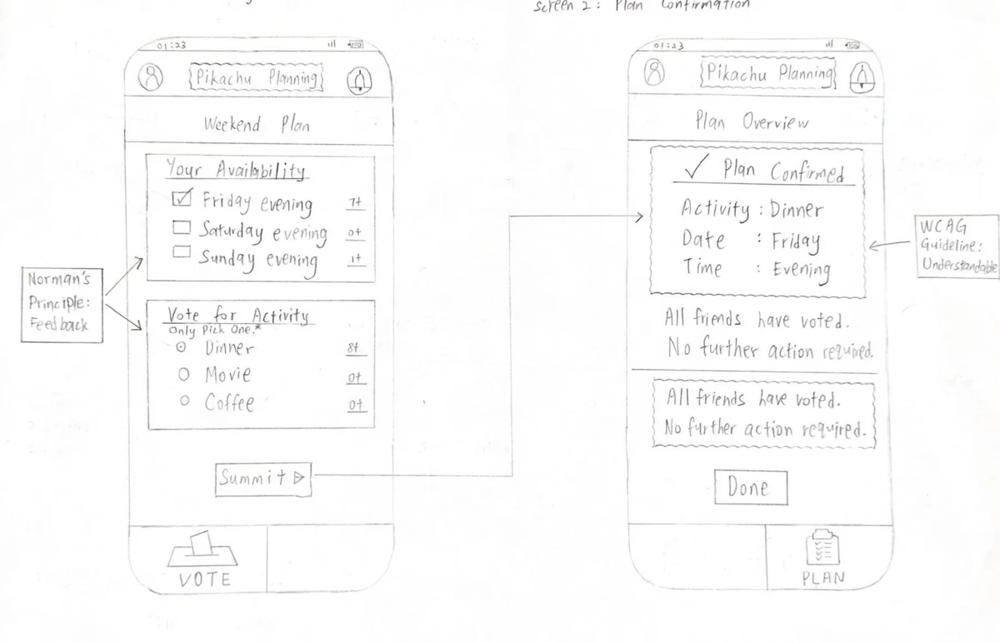

Team UX coursework · Team Pikachu · 2026
Pikachu Planning
Help a group move from too many choices and conflicting schedules to a shared plan.
- My role / scope
- Questionnaire, persona, user stories, storyboard, shared-plan sketches and heuristic evaluation.
- Evidence to inspect
- My original hand-drawn sketches, research scope and evaluation findings.
- Context
- Team high-fidelity prototype; individual research and design contributions identified separately.
Project visuals
A closer look at the work.
Choose an image to enlarge it. Each visual identifies its source or simulation status.


Original individual workWilliam’s hand-drawn low-fidelity coursework concept.
 Team prototype
Team prototypeOriginal annotated Team Pikachu high-fidelity report excerpt; team design, not sole authorship.
 Team prototype
Team prototypeOriginal annotated Team Pikachu high-fidelity report excerpt.
Start with the coordination problem
Activity planning often breaks down between choosing something to do and agreeing on a time. My research and concept work explored how shared availability, a simple vote and visible confirmation could support the next action.
| Stage | My documented contribution |
|---|---|
| Research | Questionnaire with 10 completed responses; analysis of choice and coordination difficulties. |
| Define | Research-informed Lianna persona and prioritised user stories. |
| Design | Storyboard and sketches for availability, activity voting and confirmation. |
| Evaluate | Four heuristic issues with severity ratings and recommendations. |
Turn findings into design decisions
| Observation / review issue | Proposed response |
|---|---|
| The group needs to agree on a time. | Bring availability and activity voting into the same planning flow. |
| An unfinished event can be left without warning. | Confirm before discarding entered details. |
| Exploration gives no loading feedback. | Show a visible loading state. |
| Restrictive filters can return nothing. | Explain the empty state and offer a filter reset. |
| Required fields need clearer guidance. | Identify missing fields and explain the correction. |
Research and attribution boundaries
The survey was a small workplace convenience sample: 9 of the 10 respondents were aged 18–24. It informed an exploratory design, not a representative market conclusion. Recommendations are heuristic findings; I do not claim measured usability improvements or completed user-test outcomes.
Team Pikachu: Savitri Satyavarapu, William Tan, Lauren Bernabe and Holly Law-Davis. Team prototype work is credited separately from my research, sketches and evaluation.
Open team Figma fileContinue the conversation
Want to discuss the decisions?
I can walk through the evidence and explain the boundaries of my contribution.